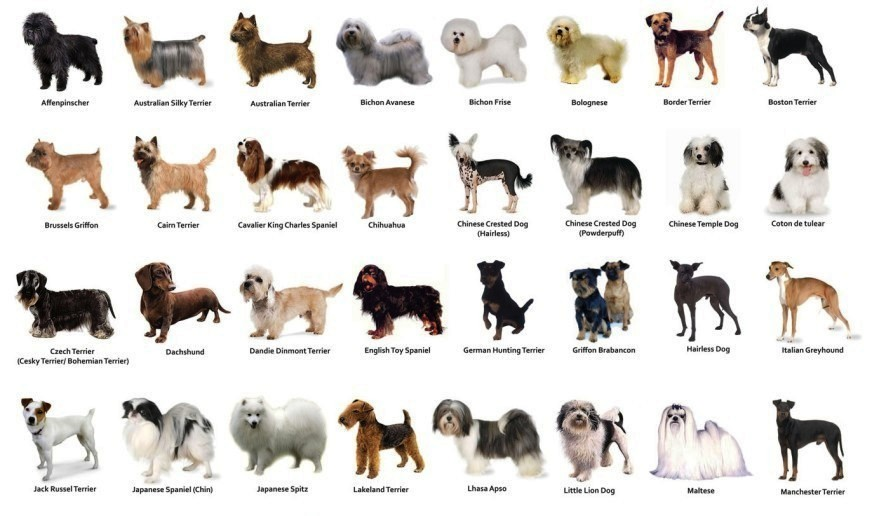

De hond (Canis lupus familiaris) is een roofdier uit de familie van de hondachtigen (Canidae), en een gedomesticeerde ondersoort van de wolf. De wetenschappelijke naam ervan werd in 1758 als Canis familiaris gepubliceerd door Carl Linnaeus.[1] De hond komt op alle continenten voor, meestal in gezelschap van de mens. Al sinds duizenden jaren wordt de hond door mensen gebruikt, bijvoorbeeld bij de jacht, als herdershond, trekdier, politiehond of hulphond, maar vaker als gezelschapsdier. Het houden van honden is niet zonder risico: er zijn in Nederland jaarlijks 150.000 bijtincidenten[2] en wereldwijd sterven naar schatting meer dan 50.000[3] mensen per jaar na een hondenbeet.
Puppytijd (0-1 jaar): Dit is het vroege stadium van het leven van een hond, gekenmerkt door snelle groei en ontwikkeling. Puppies zijn speels, nieuwsgierig en zeer energiek. Tijdens deze fase hebben ze socialisatie, basisopleiding en vaccinaties nodig om ervoor te zorgen dat ze uitgroeien tot goed aangepaste volwassenen.
Adolescentie (6 maanden - 2 jaar): De adolescentie wordt gekenmerkt door voortdurende groei, verhoogde onafhankelijkheid en soms uitdagend gedrag. Honden kunnen grenzen testen en hebben aanhoudende training en socialisatie nodig. Ze kunnen ook hun eerste loopsheid (bij teven) of hormonale veranderingen (bij reuen) ervaren.
Volwassenheid (2-7 jaar): Honden worden tijdens deze fase als volwassen beschouwd. Ze hebben hun volledige grootte en fysieke volwassenheid bereikt. Hun gedrag neigt te stabiliseren en ze hebben consistente lichaamsbeweging, mentale stimulatie en een uitgebalanceerd dieet nodig om gezond te blijven.